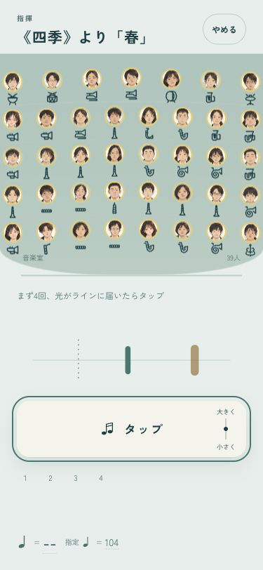
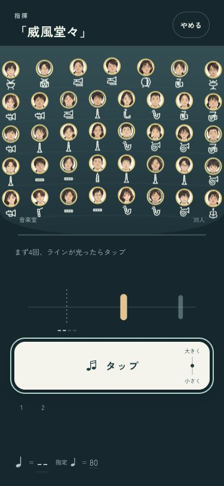

B · 舞台の中へ
止まったら、数え直せる。
テンポ出しの途中で4拍を超えて手を止めたら、最初の案内へ。もう一度振った拍だけで、演奏を始めます。演奏が始まってからは、手を休めても部員が吹き続けます。
「指揮する」を開き、最初に2回だけタップして少し手を止めると、最初の案内へ戻ります。確認ページはセーブを書き換えません。


iPhoneへ導入済み。端末がロック中のため、今回は起動未確認です。実機の見え方・音・操作感は端末で確認できます。ミラーリングなし。
codex/design · pushなし · 変更と確認の記録